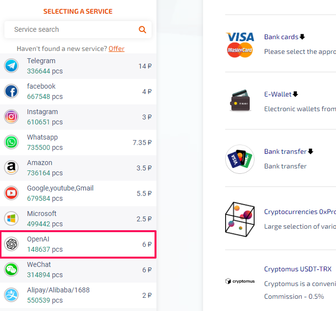
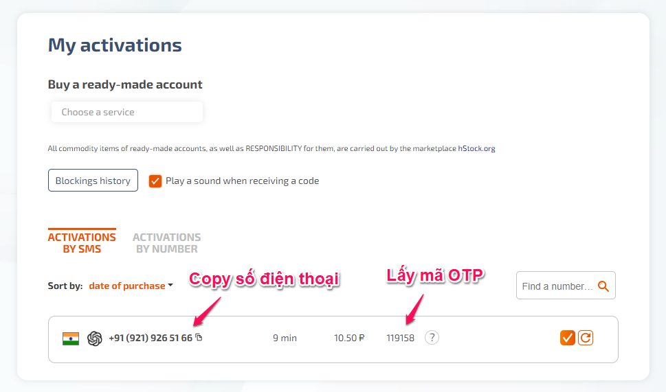
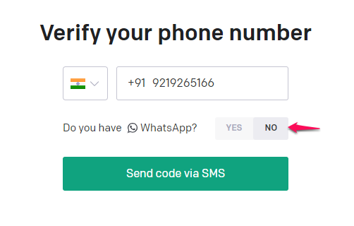
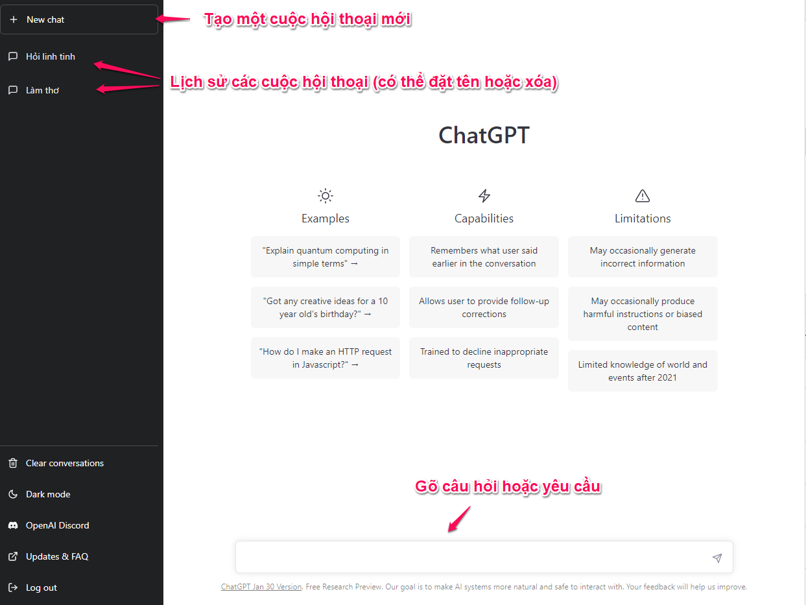

Hướng dẫn tạo tài khoản và sử dụng Chat GPT chỉ với 1 cốc trà đá
01 tháng 02, 2023 - 159564 lượt xem
Dạo này Chat GPT đang rất hot, được thần thành hóa lên quá khiến nhiều người lo sợ nó sẽ “cướp” mất công việc của mình. Vậy Chat GPT cụ thể là gì, dùng như nào?
ChatGPT thập niên 90 😂
Bài viết này mình sẽ hướng dẫn các bạn tự tạo tài khoản cho riêng mình và trải nghiệm thử ChatGPT, một công cụ khá hữu ích nếu bạn sử dụng đúng cách. Trên mạng có chia sẻ một số tài khoản miễn phí nhưng sẽ hay bị lỗi do có nhiều người truy cập. Các bạn nên tự tạo tài khoản email chính chủ, vì tài khoản này còn dùng được nhiều dịch vụ khác của OpenAI (mình sẽ hướng dẫn thêm ở các bài viết khác).
Tạo tài khoản Chat GPT
Tóm tắt các bước:
- Đăng ký tài khoản Chat GPT (dùng VPN).
- Thuê 1 số điện thoại nước ngoài để nhận SMS OTP.
- Nhập OTP để xác thực số điện thoại.
- Đăng nhập và sử dụng: https://chat.openai.com.
Hiện tại Chat GPT không cho phép tạo tài khoản ở Việt Nam, do đó để tạo được tài khoản thì chúng ta sẽ cần đổi địa chỉ IP (chỉ cần đổi khi tạo tài khoản). Các bạn có thể dùng các extension VPN free, ví dụ trên Chrome thì mình dùng Extension VeePN. Đơn giản chỉ việc cài extension lên và chọn location, sau đó bật lên để đổi địa chỉ IP sang location vừa chọn.
Ví dụ đổi location sang Netherlands
Sau khi bật VPN thì chúng ta sẽ truy cập vào https://platform.openai.com để tạo tài khoản (dùng email của bạn để tạo tài khoản chứ không dùng chức năng login với Google nhé). Tạo tài khoản xong, bạn vào email để lấy link kích hoạt. Bấm vào link kích hoạt ở email sẽ hiện ra trang nhập tên, nhập tên xong thì cần xác thực số điện thoại. Đến bước này chúng ta sẽ cần một số điện thoại nước ngoài để nhận OTP. Có nhiều dịch vụ cho thuê số điện thoại hoặc nhận SMS online. Ở đây mình dùng dịch vụ của https://sms-activate.org vì giá rẻ (chỉ khoảng 3k VNĐ 1 số điện thoại) và dễ sử dụng (nếu đọc bài viết này 😂). Các bạn đăng ký tài khoản trên https://sms-activate.org, sau đó vào nạp tiền (nạp mức tối thiểu là được). Trang này hỗ trợ khá nhiều phương thức thanh toán (có cả crypto), mình thì sử dụng thẻ Visa và thanh toán qua cổng Stripe.

Chọn phương thức thanh toán phù hợp để nạp tiền
au khi nạp tiền xong, chúng ta sẽ thuê một số điện thoại để nhận OTP. Các bạn chỉ cần nạp một số tiền bằng mức tối thiểu của phương thức thanh toán mà mình chọn là đủ, hoặc nạp hẳn 1$ đăng ký tài khoản cho bạn bè luôn. Chọn dịch vụ OpenAI bên trái và chọn một quốc gia để thuê số điện thoại. Chú ý quốc gia nào có 0 pcs tức là hết số điện thoại, còn số bên cạnh là giá tiền, trung bình vào khoảng 10 Rub 1 số điện thoại (khoảng 3000 VNĐ, bằng giá tiền 1 cốc trà đá 😁).
Chọn dịch vụ OpenAI
Thuê số điện thoại bằng cách bấm vào giỏ hàng bên cạnh quốc gia đó
Sau khi thuê xong 1 số điện thoại, chúng ta sẽ có 20 phút để nhận OTP. Nếu trong thời gian này chờ lâu mà không nhận được OTP thì có thể cancel (chữ X ở góc phải) để thuê số khác (không mất tiền).
Copy số điện thoại vừa thuê để xác thực tài khoản Chat GPT
Quay lại trang đăng ký tài khoản Chat GPT và nhập số điện thoại đã thuê để lấy OTP.
Nhập số điện thoại đã thuê để nhận OTP (chú ý bỏ mã quốc gia ở đầu)
Chờ OTP gửi về thì copy và paste vào phần Enter code là hoàn tất việc đăng ký.

Nhập mã OTP nhận được qua số điện thoại để xác thực
Đăng ký xong, phần mục đích sử dụng các bạn chọn I'm exploring personal use hoặc truy cập link này để sử dụng https://chat.openai.com (lúc này có thể tắt VPN đi cho mạng đỡ chậm).
Sử dụng Chat GPT
Sử dụng Chat GPT rất đơn giản, bạn chỉ cần nhập câu hỏi hoặc yêu cầu vào khung chat và chờ bot phản hồi. Có thể sử dụng Tiếng Anh hoặc Tiếng Việt đều được, nhưng Tiếng Anh sẽ ra kết quả chính xác hơn.
Ngoài ra bạn có thể lưu lại các đoạn chat này theo chủ đề, đặt tên cho nó để sau này xem lại (giống như lưu tài liệu vậy).
Chat GPT cũng có thể sử dụng như Google Search, khi search trên Google thì kết quả trả về sẽ mới hơn nhưng cũng nhiều hơn, dùng Chat GPT sẽ ra kết quả sau khi được chọn lọc nên trong một số trường hợp sẽ nhanh hơn search Google.
Một số extension giúp bạn sử dụng Chat GPT tiện hơn:
-
ChatGPT for Google: Tích hợp Chat GPT vào Google search, khi search ngoài hiển thị kết quả từ Google còn hiển thị cả kết quả từ Chat GPT ở bên cạnh.
-
Promptheus - Converse with ChatGPT: Thêm tính năng sử dụng giọng nói để chat thay vì gõ text.
-
ChatGPT PDF: Export lịch sử Chat GPT thành file PNG, PDF hoặc tạo link chia sẻ (extension này cài bằng source code vì chưa có trên store).
Nguồn: https://huydq.dev.
Bình luận